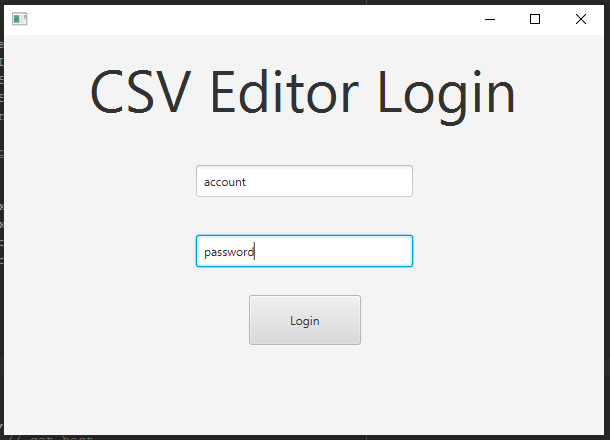
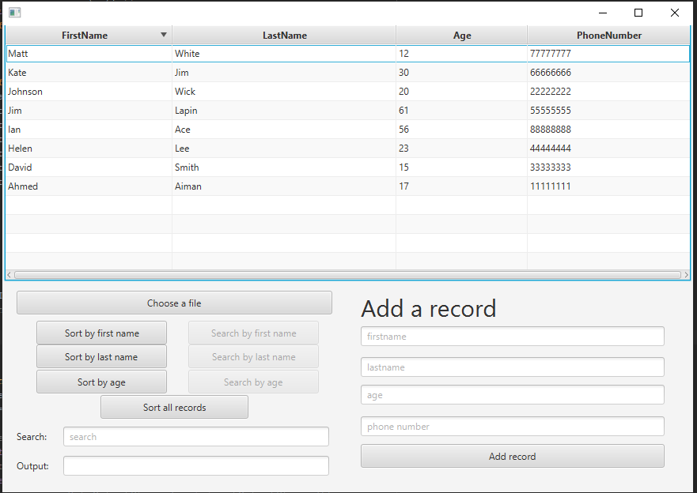

To Begin the Program, the projectserver must be started first
Then Run sortReader program
This below is the login screen for the sortReader Program
Default username: account - Default password: password

This below is the file loading screen for the sortReader Program
Select a csv file to read, sort and add records
